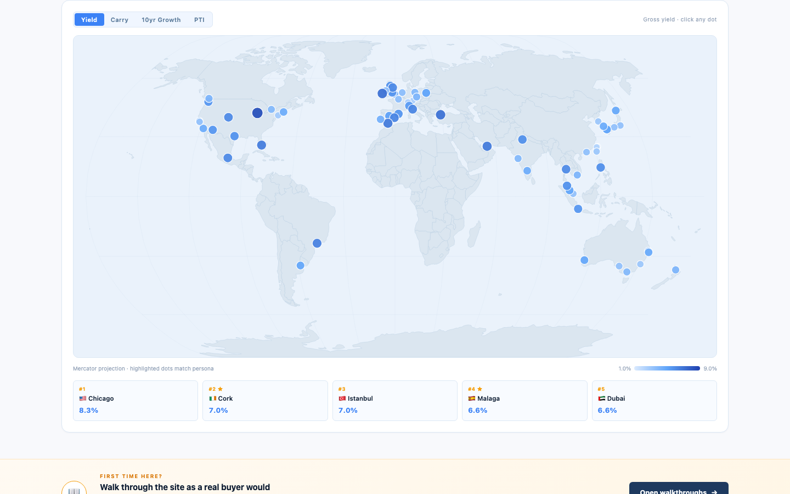
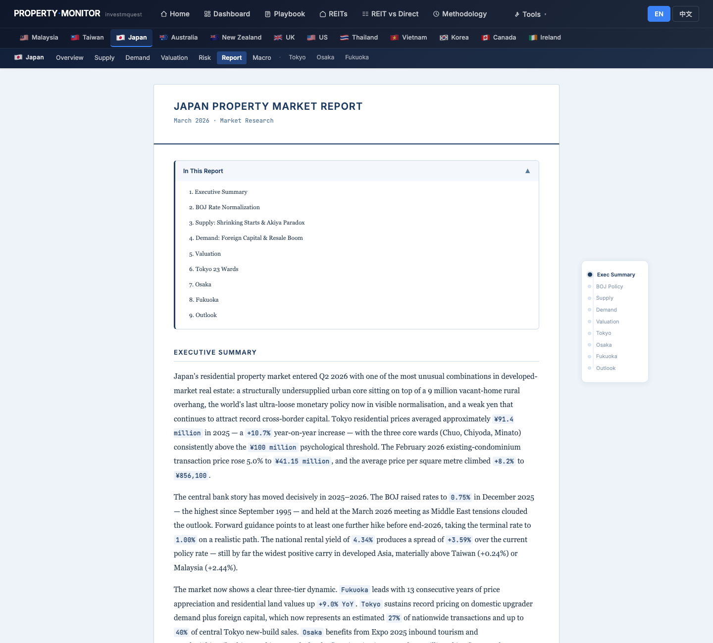
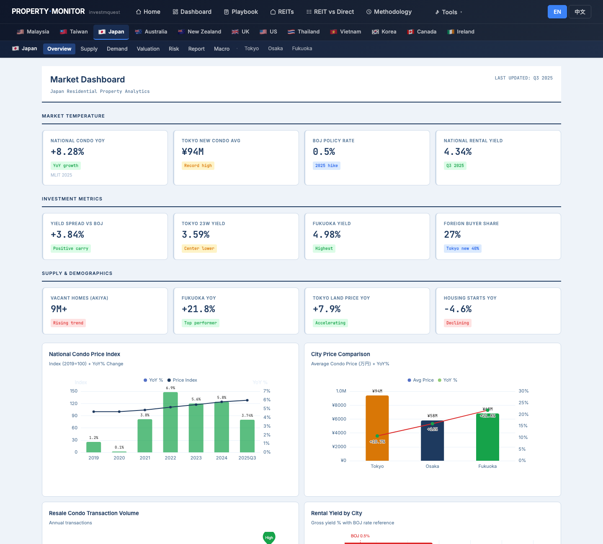
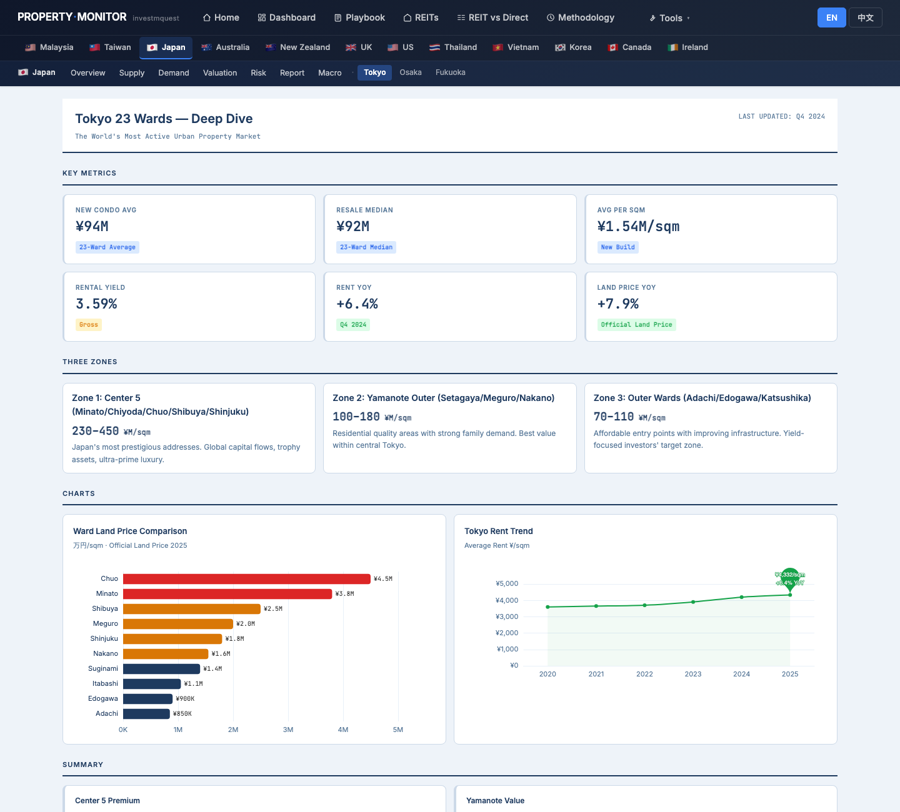
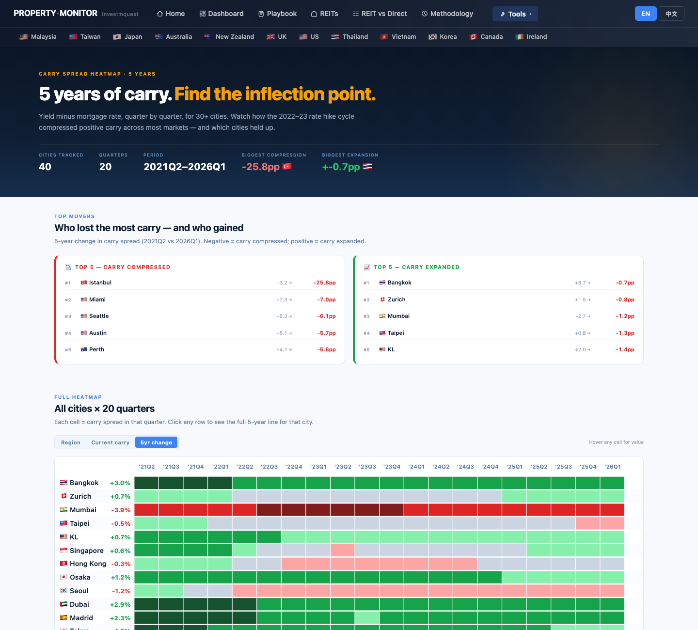
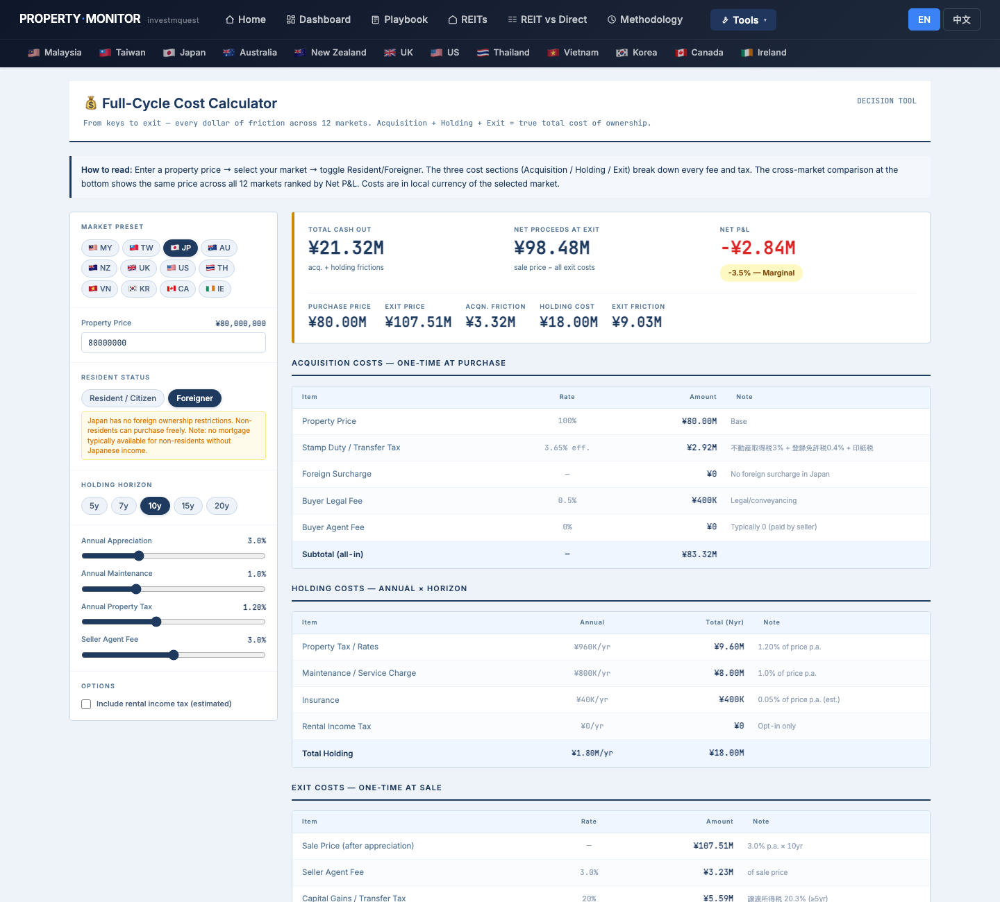
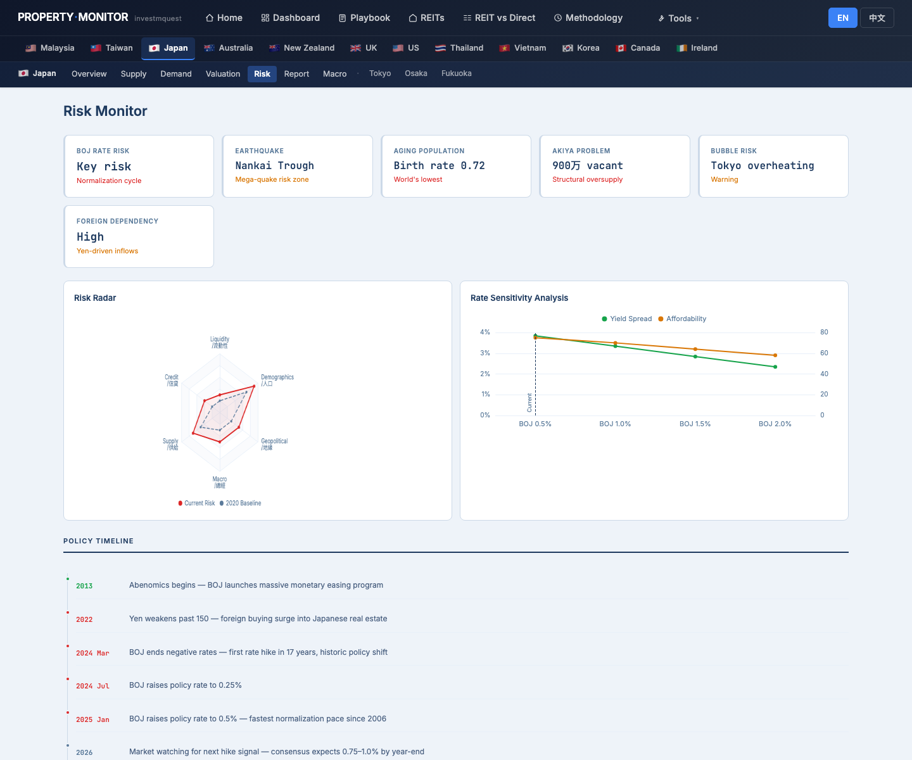

Mrs. Chung (鍾女士, 60, Taipei, retired) bought a Tokyo 1-bed condo 8 years ago. The unit has appreciated and she is now considering selling to fund her Taiwan retirement. This is the first time she's using Property Monitor as a seller, not a buyer. This walkthrough shows you which pages tell you "is now a good time to exit," what the exit costs you, and where to redeploy proceeds — using Mrs. Chung's questions as the lens. It is not investment advice, tax advice, or property recommendations. 鍾女士，60 歲，台北人，已退休，8 年前在東京買了一戶一房公寓。物件已增值，她現在考慮賣出、取回資金供台灣退休生活使用。這是她第一次以賣方身分使用 Property Monitor，不是買方。這份導覽用鍾女士的問題當主軸，告訴你哪幾頁能看出「現在是好的退場時機嗎」、退場要付哪些成本、賣出後資金怎麼再配置。本文不是投資建議、稅務建議或不動產推薦。
- Where on the site does the cycle position tell me "now is a peak — sell"?哪一頁能讓我看出「現在是週期高點 — 該賣了」？
- How do I know if Tokyo's carry is compressing — has the buy-side advantage faded?怎麼看東京的 carry 是否正在壓縮 — 買方優勢是否已消退？
- Is there a future supply wave that would compress my exit price?未來有供給潮將壓低我的出售價格嗎？
- What does my Tokyo property actually net me at exit (taxes + agent fees + FX)?東京物件賣出後，扣完稅、仲介費、匯差，我實際到手多少？
- I've held 8 years — am I in the 譲渡所得税 lower bracket?持有 8 年了 — 我在 譲渡所得税 低稅率那一檔嗎？
- If I sell, where do I redeploy — back to TW, into J-REITs, into cash?賣出後，資金怎麼再配置 — 台灣不動產、J-REIT、還是現金？
- How do I switch the site to 中文? Where do I download a PDF for my Japanese 稅理士?怎麼切到中文？怎麼下載 PDF 給我的日本稅理士看？
Mrs. Chung's click-by-click tour — 12 stops鍾女士的逐步點擊旅程 — 12 個停靠點
Each stop is a real page on the site. For each, you'll see what Mrs. Chung clicks, what she sees on the screen, and how that screen relates to her sell-side decision. Follow along in another tab — every URL works. 每個停靠點都是站上的一頁實際畫面。每站告訴你鍾女士點什麼、螢幕出現什麼、這個畫面跟她的退場決策有什麼關係。建議另開分頁跟著走 — 所有連結都能直接點。
Land on the home page and pick the "yield" persona — she still thinks like an income holder進入首頁，選「收租」persona — 她還是以收入持有人的角度看市場
What she sees: the chosen card lights up amber with a checkmark. Below the hero, a scatter chart "Carry × 10-year growth, every city plotted" highlights yield-first cities — she can see where Tokyo sits relative to competing yield markets. The question she's asking herself: "are buyers still coming into Tokyo at the same pace, or is the yield story fading?" 螢幕出現什麼：選中的卡片變琥珀色亮起並打勾。Hero 下方散點圖《利差 × 10 年漲幅，每城一點》高亮收租類城市 — 她能看到東京相對其他收租市場的位置。她問自己：「買家仍以同樣節奏進場東京，還是收租故事已在淡化？」

Use the world map to see where Tokyo sits — current yield, 10yr trend, carry, pipeline用世界地圖看東京的位置 — 當前 yield、10 年趨勢、carry、供給管道
What she sees: the Tokyo dot's color intensity changes with each metric toggle — showing Tokyo's relative position against 40+ other cities. The Top 5 strip below the map shows which cities lead the current metric; Tokyo's rank here is a proxy for how attractive it looks to today's buyer pool. 螢幕出現什麼：東京點的顏色深度隨指標切換而變 — 顯示東京相對 40+ 城市的位置。地圖下方 Top 5 顯示當前指標的領先城市；東京在 Top 5 的位置，代表它在今日買家眼中的吸引力。

Read the Japan market report — understand the 2–3 year outlook before looking at any data signals先讀日本市場報告 — 在看任何數據信號前，先了解未來 2–3 年的展望
What she sees: a 9-section analyst report in plain prose — Executive Summary, BOJ Rate Normalization, Supply (Shrinking Starts and the Akiya Paradox), Demand (Foreign Capital and Resale Boom), Valuation, Tokyo 23 Wards, Osaka, Fukuoka, Outlook. The Outlook section in particular tells her whether the analyst view is "still a seller's market for 12–24 months" or "supply wave imminent, act soon." 螢幕出現什麼：9 章節的分析師白話文報告 — Executive Summary、BOJ Rate Normalization、Supply（開工萎縮與空屋悖論）、Demand（外資湧入與中古屋榮景）、Valuation（估值）、Tokyo 23 Wards、Osaka、Fukuoka、Outlook（展望）。她特別看 Outlook 章節，確認分析師觀點是「賣方市場還有 12–24 個月」還是「供給潮快來了，快點行動」。

Japan dashboard — three KPI grids read sell-side: is the market at or near peak?日本儀表板 — 三排 KPI 以賣方角度解讀：市場是否在或接近高點？
What she sees: the same 12 KPI cards that a buyer sees — but she reads each in the opposite direction. National YoY up = good sale price comp. BOJ rate rising = carry compressing = buyers' time sensitivity growing. Foreign buyer share elevated = deep demand pool for her listing. Housing starts declining = her unit faces less competition from new supply. Below the KPIs, six ECharts charts show price index, city price comparison, resale volume, yield by city, FX vs foreign inflow, housing starts. 螢幕出現什麼：同樣 12 張 KPI 卡，但她反向解讀每一張。全國 YoY 上升 = 售價基準良好。BOJ 升息 = carry 壓縮 = 買方時間壓力增加。外國買家比例高 = 她的物件有充裕的承接需求。住宅開工下降 = 她的物件面對的新供給競爭減少。KPI 下方 6 張 ECharts：價格指數、城市比較、二手成交量、城市 yield、FX vs 外資流入、住宅開工趨勢。

Japan Macro — BOJ rate path + JPY trajectory: the two numbers that define her exit proceeds in NT$日本總經 — BOJ 升息路徑 + 日圓走勢：決定她以台幣計算的退場收益的兩個數字
What she sees: the cycle bar segments 2008–2025 into eras with a NOW marker. Six macro KPI cards (BOJ rate, urban land YoY, CPI, GDP, unemployment, avg mortgage rate). Two dual-axis line charts (monetary cycle vs property prices; real economy vs property prices). Key Cycle Events timeline ending with recent BOJ moves and forward-looking calendar items. 螢幕出現什麼：2008–2025 週期軸含 NOW 標記。6 張 macro KPI 卡（BOJ 利率、都市地價 YoY、CPI、GDP、失業率、平均房貸利率）。兩張雙軸折線圖（貨幣週期 vs 房價；實體經濟 vs 房價）。關鍵週期事件時間軸，結尾是最近 BOJ 動作與前瞻日曆事項。

Tokyo deep-dive — ward-level ¥/sqm and yield as exit pricing comps東京深度頁 — 區級 ¥/sqm 與 yield 作為退場定價參考基準
What she sees: three zone micro-cards (Center 5, Yamanote Outer, Outer Wards) with ¥/sqm ranges. Ward Land Price Comparison bar chart. Tokyo Rent Trend line. Four colored summary cards at the bottom (Center 5 Premium, Yamanote Value, Outer Opportunity, Foreign Capital). 螢幕出現什麼：三張 zone micro 卡（Center 5、Yamanote Outer、Outer Wards）含 ¥/sqm 範圍。區地價比較橫向長條圖。東京租金趨勢折線圖。底部四張彩色 summary 卡（Center 5 溢價、Yamanote 價值、Outer 機會、外資）。

Carry Heatmap sorted by 5yr change — has Tokyo's carry compressed to cycle-peak levels?Carry Heatmap 按 5 年變化排序 — 東京的 carry 是否已壓縮至週期頂部水準？
What she sees: a 41-city × 20-quarter heatmap (5 years), cells colored red→gray→green from −4% to +5% carry. The sort by 5yr change puts cities where carry collapsed at the top in red. Two Top Movers cards: TOP 5 Compressed (red list) and TOP 5 Expanded (green list). After clicking Tokyo, a detail panel shows: 5-year carry line chart, 21Q2 vs 26Q1 carry, 5yr change figure, current yield and rate side-by-side. 螢幕出現什麼：41 城 × 20 季的熱力圖（5 年），顏色從紅 → 灰 → 綠（carry −4% 到 +5%）。按 5 年變化排序，carry 崩落最多的城市排在最上方呈紅色。兩張 Top Movers 卡：TOP 5 壓縮（紅色清單）、TOP 5 擴張（綠色清單）。點 Tokyo 後，detail panel 顯示：5 年 carry 折線圖、21Q2 vs 26Q1 carry、5 年變化量、當前 yield 與利率並排。

Pipeline Cliff — is a supply wave incoming? Exit before competing listings hit the marketPipeline Cliff — 未來供給潮要來了嗎？在競爭賣盤湧現前先出場
What she sees: a quarterly delivery chart titled "Quarterly delivery as % of existing stock" for all cities, with forward supply bars city-by-city and colored risk badges (DANGER / WATCH / EASING). The chart shows 8 quarters of forward supply data. 螢幕出現什麼：所有城市的逐季交付圖《季度交付占既有存量百分比》，各城市有前瞻供給柱和彩色風險標籤（DANGER / WATCH / EASING）。圖表顯示未來 8 季的供給數據。

Cost Calculator — use the Exit Costs section to model what she actually nets after tax and feesCost Calculator — 使用 Exit Costs 區，計算扣完稅和費用後她的實際到手金額
What she sees: a hero KPI dashboard with TOTAL CASH OUT / NET PROCEEDS AT EXIT / NET P&L verdict and 5 supporting stats. Below: three breakdown tables — Acquisition (already paid, shown for context), Holding (ongoing cost + remaining years), and most importantly the Exit table: seller agent fee (~3%), 譲渡所得税 (CGT) — automatically switches between 39.6% (<5yr) and 20.3% (≥5yr) based on holding horizon input. Since she set 10y, the calculator shows the 20.3% rate — the lower bracket. A stacked bar chart visualises the cost breakdown, and a 12-market comparison table at the bottom shows how JP exit costs compare to AU, MY, UK, etc. 螢幕出現什麼：hero KPI 儀表板顯示 TOTAL CASH OUT／NET PROCEEDS AT EXIT／Net P&L 判決加 5 張輔助統計。下方三張明細表 — Acquisition（已支付，僅供參考）、Holding（持續成本 + 剩餘年數），以及最重要的 Exit 表：賣方仲介費（約 3%）、譲渡所得税（自動依持有年限切換：<5 年 39.6%、≥5 年 20.3%）。因為她設定 10y，計算機顯示 20.3% — 低稅率區間。堆疊長條圖視覺化成本分解，底部 12 市場比較表顯示 JP 退場成本與 AU、MY、UK 等市場的對比。

Japan Risk Monitor — what could compress her exit value if she waits too long?日本風險監測 — 如果她等太久，哪些風險可能壓低退場價值？
What she sees: a 6-axis Risk Radar (Liquidity / Credit / Supply / Macro / Geopolitical / Demographics — current reading vs 2020 baseline). Four colored Risk Factor cards. A vertical policy timeline from 2013 Abenomics forward to current-year and forward-looking items. Any "orange or red" item on the radar or cards represents a risk that, if materialised, would compress her exit value. 螢幕出現什麼：6 軸 Risk Radar（流動性／信用／供給／宏觀／地緣／人口 — 當前讀數 vs 2020 基準）。4 張彩色 Risk Factor 卡。從 2013 年 Abenomics 往後到當年度及前瞻事項的垂直政策時間軸。Radar 或卡片上任何「橙色或紅色」項目，代表一旦成真就會壓縮她退場價值的風險。

REIT vs Direct — should she rotate from direct Tokyo property into J-REITs, TW property, or pure cash?REIT vs Direct — 她該把東京實體轉成 J-REIT、台灣不動產，還是純現金？
What she sees: a 7-row comparison table (US/SG/JP/AU/MY/UK/EU). Columns: Direct Income / Direct Total / REIT Income / REIT Total / Gap / Winner. Below: an endpoint bar chart "$100K, after 10 years" comparing direct vs REIT paths for each market. To the right: three context cards explaining Foreign mode, foreign-friendly markets, and Treaty Relief for Taiwan. The JP row and the TW treaty card together answer her redeployment question. 螢幕出現什麼：七列比較表（美／新／日／澳／馬／英／歐）。欄位：Direct Income／Direct Total／REIT Income／REIT Total／Gap／Winner。下方終值長條圖《$100K, after 10 years》比較各市場兩條路徑。右側三張說明卡：Foreign 模式說明、對外國人友善的市場、台灣租稅協定優惠。JP 那一列加上 TW treaty 卡合起來回答她的再配置問題。

Methodology — verify the data sources behind everything she used for exit timingMethodology — 確認她用於決定退場時機的所有數據來源
What she sees: a 20-row market data sources table. Japan row: Price Index = Kantei (resale) · Rent / Vacancy = At Home + Suumo · Pipeline = MLIT housing starts · Central Bank = BoJ. Above the table: a 10-card glossary of derived metrics (Carry Spread, PTI, P/R, Vacancy Rate, Pipeline %, 10yr Cumulative, etc.) with threshold definitions. She can share this page URL with her 稅理士 as a reference for where the macro data she used comes from. 螢幕出現什麼：20 列市場資料來源表。日本那一列：Price Index = Kantei（二手）· Rent / Vacancy = At Home + Suumo · Pipeline = MLIT 住宅開工 · Central Bank = BoJ。表格上方 10 張衍生指標卡（Carry Spread、PTI、P/R、Vacancy Rate、Pipeline % 等）含閾值定義。她可以把這頁 URL 傳給她的稅理士，作為她使用的宏觀數據來源的參照。

Sell-side reading guide — how the same tools flip when you already own賣方閱讀指引 — 當你已經持有時，同樣的工具如何反向解讀
Every chart, heatmap, and KPI on this site was designed with buyers in mind — but each one has a mirror reading for sellers. These patterns apply across all markets.站上每張圖、熱力圖和 KPI 都是以買方視角設計的 — 但每一個都有對賣方的鏡像解讀。以下規律適用於所有市場。
Carry Heatmap — flip the readCarry Heatmap — 反向解讀
Buyer read: green = positive carry → good entry. Seller read: green = carry still healthy → buyers still motivated → good time to list. A red row (carry compressed) is a buyer's warning; for a seller it means the market has already re-priced — act before it re-prices further down.買方解讀：綠色 = 正 carry → 好的進場點。賣方解讀：綠色 = carry 仍健康 → 買方仍有動力 → 好的掛牌時機。紅色（carry 壓縮）對買方是警示；對賣方代表市場已經重新定價 — 在繼續向下定價前行動。
Sort by "5yr change" to find your city's compression trajectory — not just the current snapshot.按「5 年變化」排序，找到你的城市的壓縮軌跡 — 不只是當前快照。
Pipeline Cliff — urgency signal for sellersPipeline Cliff — 賣方的緊迫信號
Buyer read: EASING bucket → low competition, good entry timing. Seller read: EASING now → low competing listings today — sell before the pipeline delivers. Rising forward bars mean competing supply arrives in 2–4 quarters: that's your sell-before deadline.買方解讀：EASING 桶 → 低競爭、好的進場時機。賣方解讀：現在 EASING → 今天競爭賣盤少 — 在 pipeline 交付前賣出。前瞻柱攀升代表 2–4 季後競爭供給到來：那就是你的「賣出截止日期」。
DANGER is not "don't exit." It means "exit window is closing — you have less time."DANGER 不是「不要退場」，而是「退場窗口正在關閉 — 你的時間不多了」。
Cost Calculator — focus on the Exit tableCost Calculator — 重點看 Exit 表
A buyer uses the Acquisition section most. A seller uses the Exit section most: agent fee (3%) + 譲渡所得税 (20.3% if ≥5yr). Set your holding horizon correctly — the CGT rate flips at the 5-year mark. Check the 12-market comparison row to see how JP exit costs compare to other markets.買方最常用 Acquisition 區。賣方最常用 Exit 區：仲介費（3%）+ 譲渡所得税（≥5 年 20.3%）。正確設定持有年限 — CGT 在 5 年時翻轉。看 12 市場比較列，了解 JP 退場成本與其他市場的對比。
Enter your unit's estimated current value, not your original purchase price.輸入物件的估計現值，不是原始買入價。
REIT vs Direct — the redeployment toolREIT vs Direct — 再配置工具
Buyers use this to compare "buy direct" vs "buy REIT." Sellers use it to decide where to put proceeds: another direct property (same or different market), a REIT basket (liquidity + no management), or pure cash. Set Residency = Foreign, Period = 10yr, Home Country = TW for Mrs. Chung's exact profile.買方用這個工具比較「買實體」vs「買 REIT」。賣方用它決定退場資金去哪：另一套實體（同市場或不同市場）、REIT 組合（流動性 + 零管理），或純現金。設定 Residency = Foreign、Period = 10yr、母國 = TW，即是鍾女士的精確條件。
At retirement age, many property owners rotate from direct to REITs for the same exposure with zero management overhead.退休年齡時，許多房產持有人從實體轉向 REIT，獲得相似曝險但無管理負擔。
Language toggle + PDF for advisors語言切換 + PDF 給顧問
Top-right of every page: EN / 中文. Switch to 中文 first, then download PDF — gives a 中文 printout for Mrs. Chung's Japanese 稅理士 to review alongside. Press ⌘ + P → Save as PDF. Navbar hides in print mode for a clean output.每頁右上角：EN / 中文。先切到中文再下載 PDF — 給鍾女士日本稅理士一份中文版對照查閱。按 ⌘ + P → 另存 PDF。列印模式下 navbar 自動隱藏，版面乾淨。
Language choice persists across pages via localStorage — switch once, browse in Chinese everywhere.語言選擇透過 localStorage 跨頁記住 — 切換一次，全站中文。
KPI card colors — sell-side meaningKPI 卡顏色 — 賣方含義
Left border colors read the same way — but the implication flips. A green resale volume card means market is active — ideal exit timing. A red yield card (yield falling) actually means prices ran up — your unit is worth more. Context matters.左邊框顏色判讀相同 — 但含義翻轉。綠色的二手成交量卡代表市場活躍 — 理想退場時機。紅色的 yield 卡（yield 下降）實際上代表價格已漲 — 你的物件更值錢了。脈絡決定判斷。
What Mrs. Chung walks away with — and what she must take outside this site鍾女士帶走什麼 — 以及哪些必須拿到站外去問
After the 12-stop tour, she has a clear separation between "questions the site answered" and "questions the site flagged but cannot answer."走完 12 站後，她能清楚分開「網站已回答的問題」與「網站幫她點出但不能回答的問題」。
✓ The site answered these for her✓ 網站已回答的
- Where in the market cycle Tokyo sits — the macro page cycle bar and Report Outlook section together give the analyst's view東京目前在市場週期的哪個位置 — 總經頁週期軸與 Report Outlook 章節一起給出分析師觀點
- Whether Tokyo's carry is compressing — Carry Heatmap 5yr change sort, Tokyo row + detail panel東京 carry 是否在壓縮 — Carry Heatmap 按 5 年變化排序，東京列 + detail panel
- Whether a future supply wave is incoming in her sell window — Pipeline Cliff forward bars for Tokyo在她預期出售窗口內是否有供給潮 — Pipeline Cliff 東京的前瞻柱
- What her exit actually costs — Cost Calculator Exit section: agent fee + 譲渡所得税 at the correct bracket (20.3% since she held ≥5yr)她的退場實際成本 — Cost Calculator Exit 區：仲介費 + 正確稅率區間的 譲渡所得税（持有 ≥5 年 20.3%）
- That she's safely in the lower tax bracket — 8 years held = past the 5-year cliff = 20.3% not 39.6%她安全落在低稅率區間 — 持有 8 年 = 越過 5 年分水嶺 = 20.3% 而非 39.6%
- Whether J-REITs beat another direct purchase for a retired foreigner with TW tax treaty (REIT vs Direct tool)對台灣租稅協定的已退休外國人而言，J-REIT 是否優於另一套實體（REIT vs Direct 工具）
- Which policy/macro risks could compress exit value if she waits (JP Risk page radar + timeline)等待期間哪些政策/宏觀風險可能壓縮退場價值（JP Risk 頁 radar + 時間軸）
- Where every number she relied on comes from — Methodology Japan row (Kantei, MLIT, BoJ, Suumo)她所依據的每個數字的來源 — Methodology 日本列（Kantei、MLIT、BoJ、Suumo）
→ Questions for advisors outside this site→ 必須拿到站外問專業人士的
- Actual capital gains tax liability on her specific unit — the cost calculator uses indicative brackets; her actual taxable gain (original cost + depreciation adjustments) and residency status → 稅理士 (zeirishi) in Japan她這套物件的實際資本利得稅負 — 計算機使用示意稅率；她的實際應稅所得（原始成本 + 折舊調整）與居住身分 → 日本稅理士
- Taiwan income tax treatment of the repatriated proceeds → 台灣會計師匯回台灣的退場收益在台灣的所得稅處理 → 台灣會計師
- FX execution — when and how to convert JPY → TWD at exit: spot vs forward contract → her bank's FX desk匯率執行 — 退場時 JPY → TWD 何時如何換匯：即期 vs 遠期合約 → 往來銀行 FX 部門
- Listing price, timing, and agent selection for her specific unit in her specific ward → licensed Tokyo real estate agent (宅地建物取引士)她的物件在該區的掛牌價、時機與仲介選擇 → 有牌照的東京不動產仲介（宅地建物取引士）
- Inheritance and estate planning around the proceeds (she's 60, retired) → 稅理士 for Japan inheritance (相続税) implications + Taiwan estate planning attorney退場資金的繼承與遺產規劃（她 60 歲、已退休）→ 日本稅理士了解相続税含義 + 台灣遺產規劃律師
- Property management company severance — terminating the PM contract and any tenant notice obligations → the current PM company物業管理公司解約 — 終止 PM 合約與任何租客通知義務 → 現有 PM 公司
The site's best-supported call for Mrs. Chung站上資料能支持的最佳選項 — 給鍾太太
Not a personalized recommendation — a single, opinionated call assembled only from data this site already shows in SECTIONS 01–04.非個人化推薦 — 是從 SECTION 01–04 站上資料推導出的單一明確建議。
✓ Pre-list checklist (from site data)✓ 掛盤前 checklist（站上資料能驗證的）
- Carry Heatmap Tokyo: rolling carry trending flat or down → confirms exit thesis.Tokyo Carry Heatmap：rolling carry 持平或下行 → 確認 exit 論點。
- Pipeline Cliff Tokyo for her sub-tier: 24-month forward supply not in EASING (i.e., supply still loading).她那個 sub-tier 的 Tokyo Pipeline Cliff：未來 24 個月供給不在 EASING（仍在累積）。
- Exit Cost Calculator: post-tax net + 20% non-resident WHT + ¥-NTD FX cleared her after-cost hurdle.Exit Cost Calculator：稅後淨額 + 20% 非居住者預扣 + ¥-NTD 匯率，仍通過扣成本後門檻。
- Risk page Japan: BOJ policy + immigration / rental rule changes won't shift demand in her favour in next 12 months.Japan Risk 頁：BOJ 政策 + 移民/租賃法規變動，未來 12 個月不會替她推升需求。
- Methodology Japan row: comp set is from BOJ / MLIT / 統計局 (not broker estimates) — gives realistic, not aspirational price guidance.Methodology 日本那列：comp set 來自 BOJ / MLIT / 統計局（非仲介估價）— 給的是務實價而非理想價。
→ Off-site next steps (the site cannot answer)→ 走出站外的下一步（站上無法回答的）
- 2-3 仲介 price guidance — comp-based listing price; do not anchor on her own purchase cost.2-3 家仲介 price guidance — 用 comp 訂價；不要 anchor 在自己當初買價。
- 稅理士 (zeirishi) + Taiwan 會計師 — non-resident exit: 20% WHT on gross sale price, then refund mechanism if eligible; coordinate with TW basic income tax.日本稅理士 + 台灣會計師 — 非居住者賣方：售價 20% 預扣，事後若合格申請退稅；協調 TW 基本所得稅。
- 司法書士 — title transfer, mortgage discharge (if any), foreign-seller documentation.司法書士 — 過戶、塗銷抵押（若有）、外籍賣方文件。
- FX desk — JPY→TWD repatriation: spread / timing strategy; consider staged conversion.銀行 FX desk — JPY→TWD 匯回：價差/時點策略；考慮分階段換匯。
- Reinvestment plan — site supports exit, but the next deployment (cash / bond / domestic property / REIT) needs separate analysis.再投資計畫 — 站上支持 exit，但下一步配置（現金 / 債券 / 國內房 / REIT）需另作分析。
Listing within the next 6 months is the single call most consistent with the 12 stops. Hesitating 12 months exposes her to softer carry + heavier supply — and the site shows exactly why. The site cannot, however, pick the specific broker or time the FX swap.未來 6 個月內掛盤是 12 站走完後最一致的選項。再拖 12 個月會遇到 carry 走弱 + 供給壓力 — 站上有完整圖表說明為什麼。但具體找哪家仲介、何時換匯 — 站上無法幫她決定。